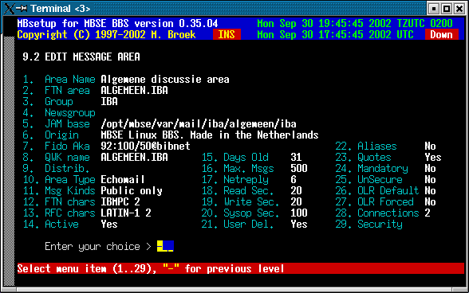

Last update 14-Oct-2007
MBSE BBS Setup - Mail Setup -> Mail Areas.
Introduction.
Mail areas have fixed area numbers, just like file areas. But if you want you can move areas. Some offline readers don't like changing the area numbers. All areas can be of the following types: local, netmail, echomail and news. If you gate news and echomail in the same area, then select echomail if this area is a Fidonet area, select news if this area is a Usenet news area.
There is a global setup tool, if you are in the main message area setup screen then you can choose the Global command. This will allow you to do bulk changes on areas selected by the mail groups. Options are delete connection, add new connection, replace connection, change connection status, change days old for purge, change maximum messages for purge, change user security, change aka to use, change origin line, change netmail reply board and delete message area.
Message Area Setup.
Area Name The description of the area. Area Tag The echomail area tag. Group The name of the echomail group. Newsgroup The newsgroup name if you are gating this area. JAM base The path and name of the JAM message base without extension. Origin The origin line to add to echomail messages. Fido Aka The Fidonet aka for this area. QWK name The name of the area for OffLine Readers. Distrib. Leave this blank for now! Area Type Local, Netmail, Echomail or News. Msg Kinds Private/Public, Private, Public, Read Only. Charset Default characterset for the area Active If this area is active. Days Old The maximum age of the messages before purging. Max. Msgs The maximum messages in this area. Articles The maximum news headers to fetch. Netreply Netmail reply area if this is echomail. Read Sec. The security level to read messages. Write Sec. The security level to write messages. Sysop Sec. The security level to do sysop actions. User Del. Users may delete their own messages. Aliases Allow the use of an Alias. Quotes Add a random quote under new messages (Oneliner database). Mandatory If this area is mandatory for downlinks. UnSecure Don't check link address during toss (Dangerous!). OLR Default Switch area default on for OLR users. OLR Forced Area is always on for OLR users. Connections This will take you to the screen to edit up and downlinks. Security The security flags for downlinks to access this area.

Edit connection
Aka The network address. Send to Export mail to this node. Recv from Import mail form this node. Pause The node is temporary disconnected. Excluded The node is disconnected by the sysop. Delete Delete this connection.
A note about the excluded switch. This can be used to disconnect a node from the area by moderator request. AreaMgr requests from that node for this area are not processed anymore, he cannot disconnect this area and reconnect. If you want to block access to the area in a certain group for a node who has access to the group you should use the Security flags and also set the correct security flags for the node.
Global Commands.
From menu 9.2 you can enter the global commands menu. In this menu you can:
- Delete connection
- Add new connection
- Replace connection
- Change connection status
- Change days old
- Change max. messages
- Change max. articles
- Change bbs security
- Change link security
- Change aka to use
- Change origin line
- Change netmail reply
- Delete message area
Automatic area creation.
If you want to use the automatic area creation you have to define this in the message area groups. This has been changed since MBSE BBS version 0.33.19.
 Back to Mail Setup
Back to Mail Setup